学习不走弯路，关注公众号 回复「学习路线」，获取mall项目专属学习路线！
mall整合RabbitMQ实现延迟消息
本文主要讲解mall整合RabbitMQ实现延迟消息的过程，以发送延迟消息取消超时订单为例。
项目使用框架介绍
RabbitMQ
RabbitMQ是一个被广泛使用的开源消息队列。它是轻量级且易于部署的，它能支持多种消息协议。RabbitMQ可以部署在分布式和联合配置中，以满足高规模、高可用性的需求。
RabbitMQ的安装和使用
- 安装Erlang，下载地址：http://erlang.org/download/otp_win64_21.3.exe
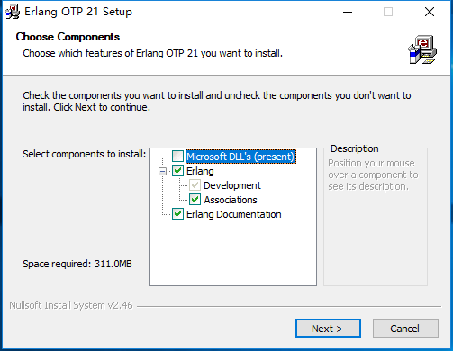
- 安装RabbitMQ，下载地址：https://dl.bintray.com/rabbitmq/all/rabbitmq-server/3.7.14/rabbitmq-server-3.7.14.exe
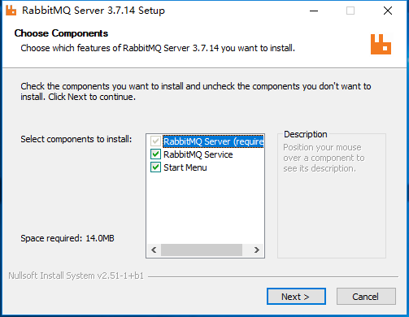
- 安装完成后，进入RabbitMQ安装目录下的sbin目录
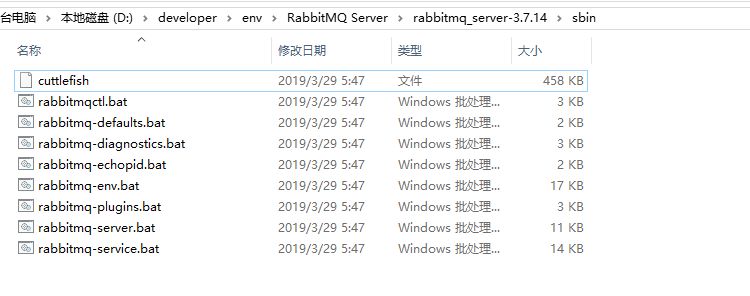
在地址栏输入cmd并回车启动命令行，然后输入以下命令启动管理功能：
rabbitmq-plugins enable rabbitmq_management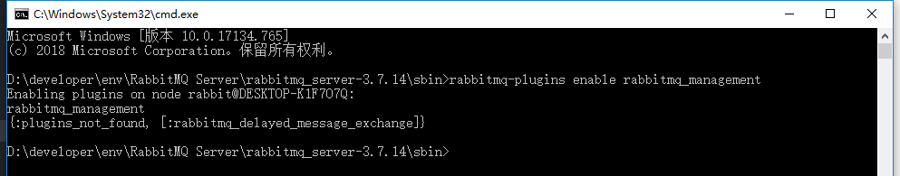
访问地址查看是否安装成功：http://localhost:15672/
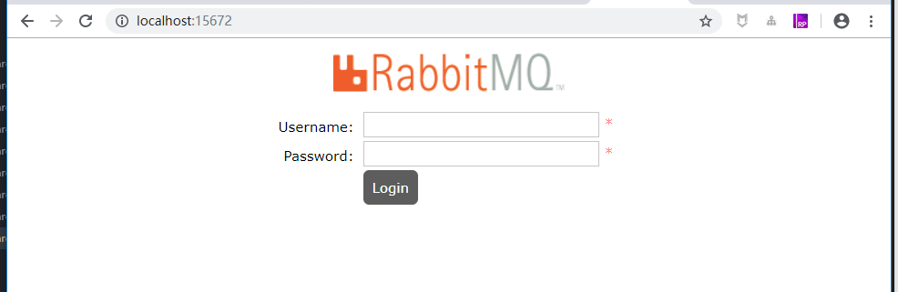
输入账号密码并登录：guest guest
创建帐号并设置其角色为管理员：mall mall
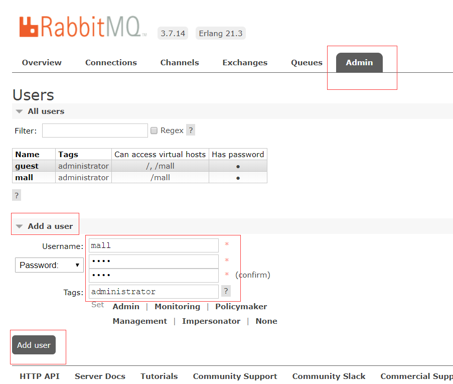
- 创建一个新的虚拟host为：/mall
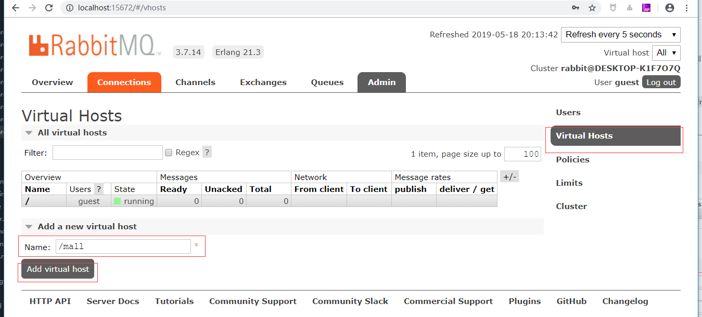
- 点击mall用户进入用户配置页面
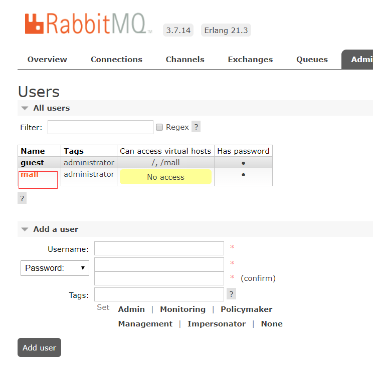
- 给mall用户配置该虚拟host的权限
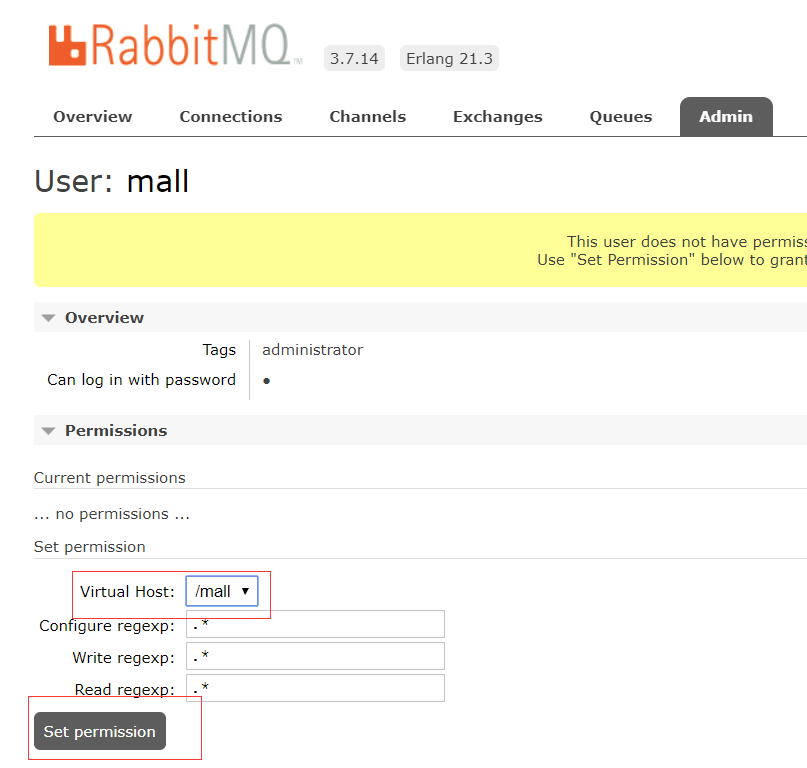
- 至此，RabbitMQ的安装和配置完成。
RabbitMQ的消息模型

| 标志 | 中文名 | 英文名 | 描述 |
|---|---|---|---|
| P | 生产者 | Producer | 消息的发送者，可以将消息发送到交换机 |
| C | 消费者 | Consumer | 消息的接收者，从队列中获取消息进行消费 |
| X | 交换机 | Exchange | 接收生产者发送的消息，并根据路由键发送给指定队列 |
| Q | 队列 | Queue | 存储从交换机发来的消息 |
| type | 交换机类型 | type | direct表示直接根据路由键（orange/black）发送消息 |
Lombok
Lombok为Java语言添加了非常有趣的附加功能，你可以不用再为实体类手写getter,setter等方法，通过一个注解即可拥有。
注意：需要安装idea的Lombok插件，并在项目中的pom文件中添加依赖。
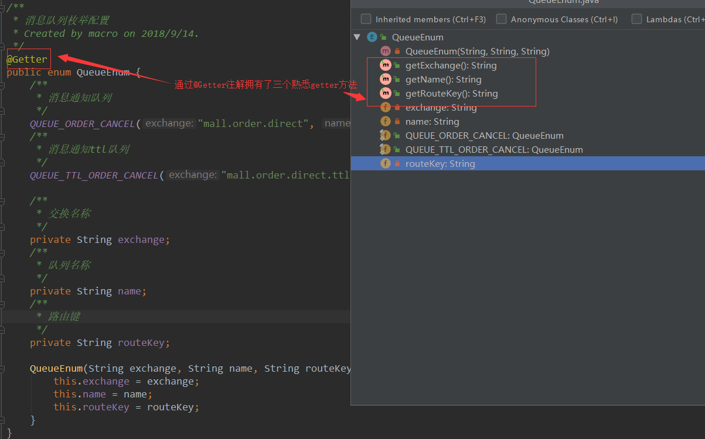
业务场景说明
用于解决用户下单以后，订单超时如何取消订单的问题。
- 用户进行下单操作（会有锁定商品库存、使用优惠券、积分一系列的操作）；
- 生成订单，获取订单的id；
- 获取到设置的订单超时时间（假设设置的为60分钟不支付取消订单）；
- 按订单超时时间发送一个延迟消息给RabbitMQ，让它在订单超时后触发取消订单的操作；
- 如果用户没有支付，进行取消订单操作（释放锁定商品库存、返还优惠券、返回积分一系列操作）。
整合RabbitMQ实现延迟消息
在pom.xml中添加相关依赖
<!--消息队列相关依赖-->
<dependency>
<groupId>org.springframework.boot</groupId>
<artifactId>spring-boot-starter-amqp</artifactId>
</dependency>
<!--lombok依赖-->
<dependency>
<groupId>org.projectlombok</groupId>
<artifactId>lombok</artifactId>
<optional>true</optional>
</dependency>
修改SpringBoot配置文件
修改application.yml文件，在spring节点下添加RabbitMQ相关配置。
rabbitmq:
host: localhost # rabbitmq的连接地址
port: 5672 # rabbitmq的连接端口号
virtual-host: /mall # rabbitmq的虚拟host
username: mall # rabbitmq的用户名
password: mall # rabbitmq的密码
publisher-confirms: true #如果对异步消息需要回调必须设置为true
添加消息队列的枚举配置类QueueEnum
用于延迟消息队列及处理取消订单消息队列的常量定义，包括交换机名称、队列名称、路由键名称。
package com.macro.mall.tiny.dto;
import lombok.Getter;
/**
* 消息队列枚举配置
* Created by macro on 2018/9/14.
*/
@Getter
public enum QueueEnum {
/**
* 消息通知队列
*/
QUEUE_ORDER_CANCEL("mall.order.direct", "mall.order.cancel", "mall.order.cancel"),
/**
* 消息通知ttl队列
*/
QUEUE_TTL_ORDER_CANCEL("mall.order.direct.ttl", "mall.order.cancel.ttl", "mall.order.cancel.ttl");
/**
* 交换名称
*/
private String exchange;
/**
* 队列名称
*/
private String name;
/**
* 路由键
*/
private String routeKey;
QueueEnum(String exchange, String name, String routeKey) {
this.exchange = exchange;
this.name = name;
this.routeKey = routeKey;
}
}
添加RabbitMQ的配置
用于配置交换机、队列及队列与交换机的绑定关系。
package com.macro.mall.tiny.config;
import com.macro.mall.tiny.dto.QueueEnum;
import org.springframework.amqp.core.*;
import org.springframework.context.annotation.Bean;
import org.springframework.context.annotation.Configuration;
/**
* 消息队列配置
* Created by macro on 2018/9/14.
*/
@Configuration
public class RabbitMqConfig {
/**
* 订单消息实际消费队列所绑定的交换机
*/
@Bean
DirectExchange orderDirect() {
return (DirectExchange) ExchangeBuilder
.directExchange(QueueEnum.QUEUE_ORDER_CANCEL.getExchange())
.durable(true)
.build();
}
/**
* 订单延迟队列队列所绑定的交换机
*/
@Bean
DirectExchange orderTtlDirect() {
return (DirectExchange) ExchangeBuilder
.directExchange(QueueEnum.QUEUE_TTL_ORDER_CANCEL.getExchange())
.durable(true)
.build();
}
/**
* 订单实际消费队列
*/
@Bean
public Queue orderQueue() {
return new Queue(QueueEnum.QUEUE_ORDER_CANCEL.getName());
}
/**
* 订单延迟队列（死信队列）
*/
@Bean
public Queue orderTtlQueue() {
return QueueBuilder
.durable(QueueEnum.QUEUE_TTL_ORDER_CANCEL.getName())
.withArgument("x-dead-letter-exchange", QueueEnum.QUEUE_ORDER_CANCEL.getExchange())//到期后转发的交换机
.withArgument("x-dead-letter-routing-key", QueueEnum.QUEUE_ORDER_CANCEL.getRouteKey())//到期后转发的路由键
.build();
}
/**
* 将订单队列绑定到交换机
*/
@Bean
Binding orderBinding(DirectExchange orderDirect,Queue orderQueue){
return BindingBuilder
.bind(orderQueue)
.to(orderDirect)
.with(QueueEnum.QUEUE_ORDER_CANCEL.getRouteKey());
}
/**
* 将订单延迟队列绑定到交换机
*/
@Bean
Binding orderTtlBinding(DirectExchange orderTtlDirect,Queue orderTtlQueue){
return BindingBuilder
.bind(orderTtlQueue)
.to(orderTtlDirect)
.with(QueueEnum.QUEUE_TTL_ORDER_CANCEL.getRouteKey());
}
}
在RabbitMQ管理页面可以看到以下交换机和队列
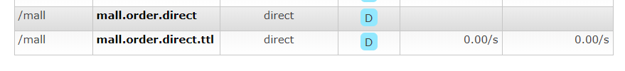
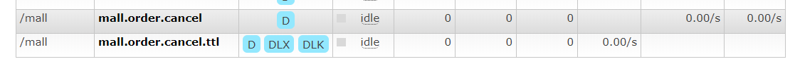
交换机及队列说明
- mall.order.direct（取消订单消息队列所绑定的交换机）:绑定的队列为mall.order.cancel，一旦有消息以mall.order.cancel为路由键发过来，会发送到此队列。
- mall.order.direct.ttl（订单延迟消息队列所绑定的交换机）:绑定的队列为mall.order.cancel.ttl，一旦有消息以mall.order.cancel.ttl为路由键发送过来，会转发到此队列，并在此队列保存一定时间，等到超时后会自动将消息发送到mall.order.cancel（取消订单消息消费队列）。
添加延迟消息的发送者CancelOrderSender
用于向订单延迟消息队列（mall.order.cancel.ttl）里发送消息。
package com.macro.mall.tiny.component;
import com.macro.mall.tiny.dto.QueueEnum;
import org.slf4j.Logger;
import org.slf4j.LoggerFactory;
import org.springframework.amqp.AmqpException;
import org.springframework.amqp.core.AmqpTemplate;
import org.springframework.amqp.core.Message;
import org.springframework.amqp.core.MessagePostProcessor;
import org.springframework.beans.factory.annotation.Autowired;
import org.springframework.stereotype.Component;
/**
* 取消订单消息的发出者
* Created by macro on 2018/9/14.
*/
@Component
public class CancelOrderSender {
private static Logger LOGGER =LoggerFactory.getLogger(CancelOrderSender.class);
@Autowired
private AmqpTemplate amqpTemplate;
public void sendMessage(Long orderId,final long delayTimes){
//给延迟队列发送消息
amqpTemplate.convertAndSend(QueueEnum.QUEUE_TTL_ORDER_CANCEL.getExchange(), QueueEnum.QUEUE_TTL_ORDER_CANCEL.getRouteKey(), orderId, new MessagePostProcessor() {
@Override
public Message postProcessMessage(Message message) throws AmqpException {
//给消息设置延迟毫秒值
message.getMessageProperties().setExpiration(String.valueOf(delayTimes));
return message;
}
});
LOGGER.info("send delay message orderId:{}",orderId);
}
}
添加取消订单消息的接收者CancelOrderReceiver
用于从取消订单的消息队列（mall.order.cancel）里接收消息。
package com.macro.mall.tiny.component;
import com.macro.mall.tiny.service.OmsPortalOrderService;
import org.slf4j.Logger;
import org.slf4j.LoggerFactory;
import org.springframework.amqp.rabbit.annotation.RabbitHandler;
import org.springframework.amqp.rabbit.annotation.RabbitListener;
import org.springframework.beans.factory.annotation.Autowired;
import org.springframework.stereotype.Component;
/**
* 取消订单消息的处理者
* Created by macro on 2018/9/14.
*/
@Component
@RabbitListener(queues = "mall.order.cancel")
public class CancelOrderReceiver {
private static Logger LOGGER =LoggerFactory.getLogger(CancelOrderReceiver.class);
@Autowired
private OmsPortalOrderService portalOrderService;
@RabbitHandler
public void handle(Long orderId){
LOGGER.info("receive delay message orderId:{}",orderId);
portalOrderService.cancelOrder(orderId);
}
}
添加OmsPortalOrderService接口
package com.macro.mall.tiny.service;
import com.macro.mall.tiny.common.api.CommonResult;
import com.macro.mall.tiny.dto.OrderParam;
import org.springframework.transaction.annotation.Transactional;
/**
* 前台订单管理Service
* Created by macro on 2018/8/30.
*/
public interface OmsPortalOrderService {
/**
* 根据提交信息生成订单
*/
@Transactional
CommonResult generateOrder(OrderParam orderParam);
/**
* 取消单个超时订单
*/
@Transactional
void cancelOrder(Long orderId);
}
添加OmsPortalOrderService的实现类OmsPortalOrderServiceImpl
package com.macro.mall.tiny.service.impl;
import com.macro.mall.tiny.common.api.CommonResult;
import com.macro.mall.tiny.component.CancelOrderSender;
import com.macro.mall.tiny.dto.OrderParam;
import com.macro.mall.tiny.service.OmsPortalOrderService;
import org.slf4j.Logger;
import org.slf4j.LoggerFactory;
import org.springframework.beans.factory.annotation.Autowired;
import org.springframework.stereotype.Service;
/**
* 前台订单管理Service
* Created by macro on 2018/8/30.
*/
@Service
public class OmsPortalOrderServiceImpl implements OmsPortalOrderService {
private static Logger LOGGER = LoggerFactory.getLogger(OmsPortalOrderServiceImpl.class);
@Autowired
private CancelOrderSender cancelOrderSender;
@Override
public CommonResult generateOrder(OrderParam orderParam) {
//todo 执行一系类下单操作，具体参考mall项目
LOGGER.info("process generateOrder");
//下单完成后开启一个延迟消息，用于当用户没有付款时取消订单（orderId应该在下单后生成）
sendDelayMessageCancelOrder(11L);
return CommonResult.success(null, "下单成功");
}
@Override
public void cancelOrder(Long orderId) {
//todo 执行一系类取消订单操作，具体参考mall项目
LOGGER.info("process cancelOrder orderId:{}",orderId);
}
private void sendDelayMessageCancelOrder(Long orderId) {
//获取订单超时时间，假设为60分钟
long delayTimes = 30 * 1000;
//发送延迟消息
cancelOrderSender.sendMessage(orderId, delayTimes);
}
}
添加OmsPortalOrderController定义接口
package com.macro.mall.tiny.controller;
import com.macro.mall.tiny.dto.OrderParam;
import com.macro.mall.tiny.service.OmsPortalOrderService;
import io.swagger.annotations.Api;
import io.swagger.annotations.ApiOperation;
import org.springframework.beans.factory.annotation.Autowired;
import org.springframework.stereotype.Controller;
import org.springframework.web.bind.annotation.RequestBody;
import org.springframework.web.bind.annotation.RequestMapping;
import org.springframework.web.bind.annotation.RequestMethod;
import org.springframework.web.bind.annotation.ResponseBody;
/**
* 订单管理Controller
* Created by macro on 2018/8/30.
*/
@Controller
@Api(tags = "OmsPortalOrderController", description = "订单管理")
@RequestMapping("/order")
public class OmsPortalOrderController {
@Autowired
private OmsPortalOrderService portalOrderService;
@ApiOperation("根据购物车信息生成订单")
@RequestMapping(value = "/generateOrder", method = RequestMethod.POST)
@ResponseBody
public Object generateOrder(@RequestBody OrderParam orderParam) {
return portalOrderService.generateOrder(orderParam);
}
}
进行接口测试
调用下单接口
注意：已经将延迟消息时间设置为30秒
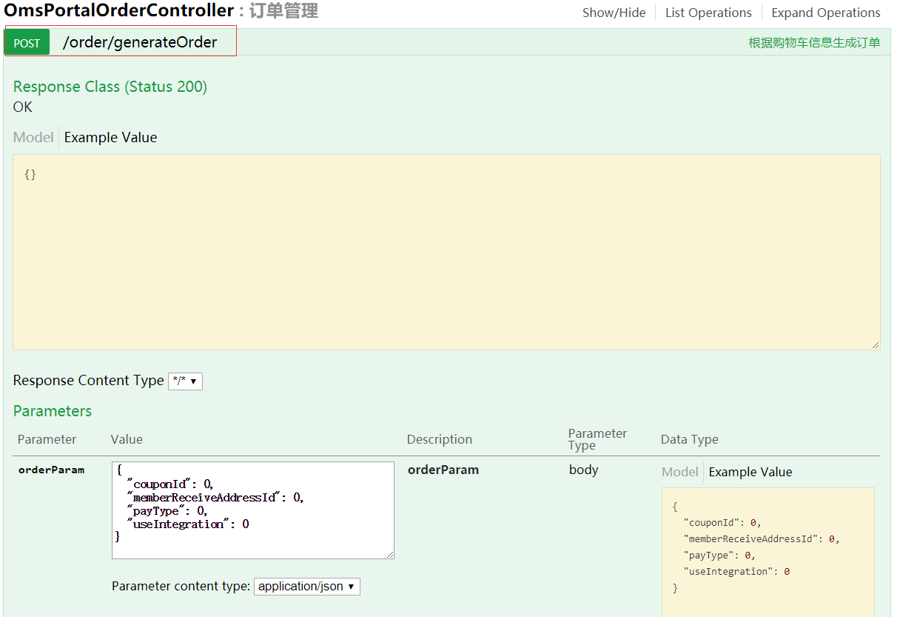
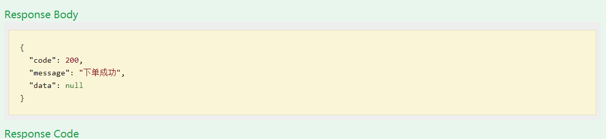
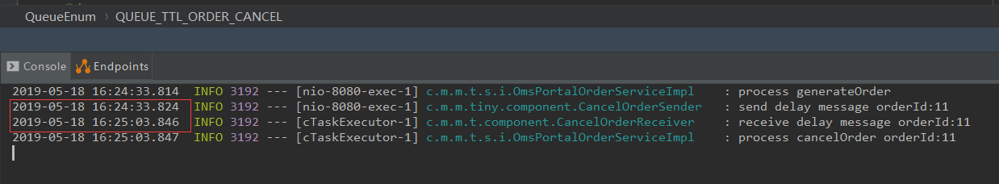
项目源码地址
https://github.com/macrozheng/mall-learning/tree/master/mall-tiny-08
公众号